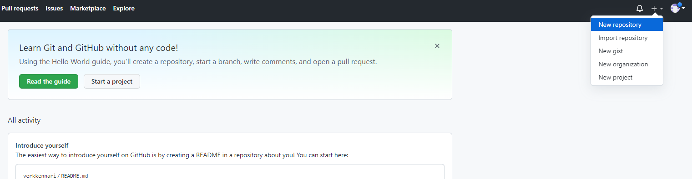
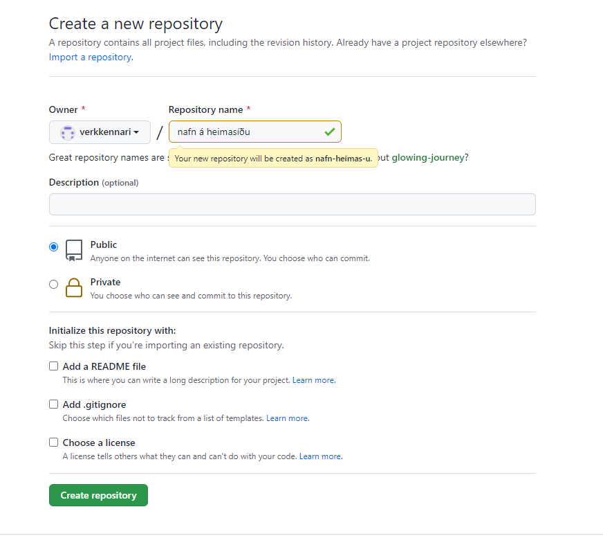
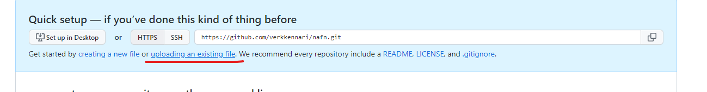
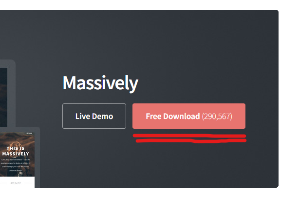
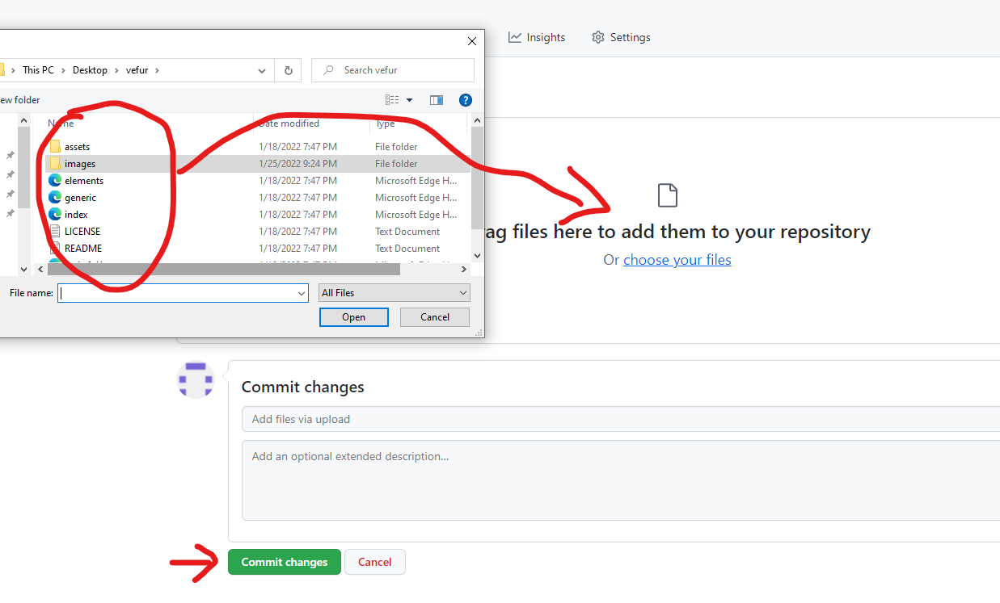
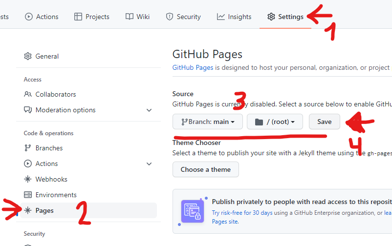

Laser
Skurður

Ég er staddur fyrir austan og fæ aðgang af fablab austurlands til að vinna að verkefnum fyrir þennan áfanga. leiser skerin sem er hér heitir epilog laser mini, með skurðarflöt upp á 300x600mm.
fyrsta sem ég gerði var að gera kerf prufu sem er ætlað að finna rétta skurðar þykkt á leisernum. prófunin er framkvæmd með að gera teikningu fyrir leiser skeran, ég teiknaði í autocad 20stk 10x200mm ferninga. teikningin var svo færð inn í inkscape og línur stiltar á 0.02 fyrir skurðin, eftir að hafa skorið efnið niður er því ýtt kubbunum saman og mælt samanlögð þykkt leiser skurðana, því máli er svo deilt með fjölda leiserskurða.
Fyrsta prufan sem ég gerði var í 4mm krossvið, krossviðurinn sem var til var heldur snúinn og var því kerf prófið ekki nógu nákvæmt þar sem skurðarþykkin breikkaði þar sem efnið lyftist upp. Ég notaði því 4mm mdf og var heildar skurður 3.087mm sem deild var með 20 og fann út að kefið fyrir 4mm mdf í þessum laiser er 0.147mm, enn það þarf samt að hafa í huga að leiserskurðrinn er ekki allveg 90° í gegnum efnið heldur myndar hann örlítið kónískan skurð.
Þegar búið er að stofna aðgang að github er að byrja á að stofna nýtt responitory
Hér skrifar þú það sem mun vera slóðin af síðunni
Ég valdi mér að byrja með tilsniðna síðu frá Html5up.net og velur því hér "uploading an existing file".
Síðan min byggir á massively frá html5up, síðan kemur í zip formi og þarf að unzip-a möppunni og vista möppuna upp á nýtt.
Næst er að draga allt innan úr möppunni inn á github síðuna, og vista breytingar.
Til að virkja síðuna er farið í Settings - og neðst þar pages, velja branch - main og vista. Þá ætti síðan að vera virk
Þá er komið að því að fikta í síðunni, gott er byrja að breyta litlu í einu og fylgjast með breytingum á síðunni sjálfri t.d byrja á forsíðunni sem er skjalið Index. Það er mismunandi texi allstaðar á síðinni til að auðvelda manni hvar maður er á síðunni, hver undirsíða þarf svo að eiga sér skjal eins og general og elements. Til að gera undirsíðu fyrir verkefnin er gott að taka t.d general síðuna og afrita og sníða hana til og margfalda hana svo fyrir næstu verkefni.
það sem ég stoppaði hvað lengst á var að verkefna síðan hjá mér var ekki að virka og var það útaf myllu merki sem ég tók seint eftir, kóði eins og -a href="#verkefni1.html" class="button">Verkefni 1 - þarna var eitt myllu merki fyrir framan verkefni 1 sem truflaði tengilin.
Það er síðan gott að nota elements síðuna til að átta sig á texta, myndastærð, tenglum, töflugerð og þess háttar til að bæta við eftir þörfum inn á síðuna